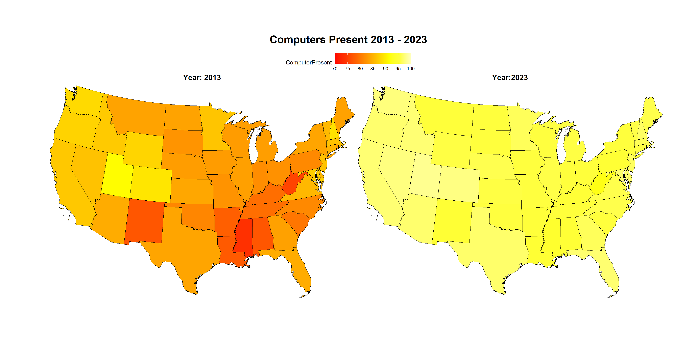

library(httr)
library(jsonlite)
library(stringr)
library(data.table)
library(withr)
library(sf)
library(kableExtra)
library(ggplot2)
library(RplotterPkg)
library(RcensusPkg)RcensusPkg Examples
Introduction
Accessing the US Census Bureau’s database of survey data and map geometries via their API can be a challenge. The developer is faced with the Bureau’s many datasets and collection of TIGER/Line Shapefiles. The R package RcensusPkg can help by providing specific functions for checking on the availability of geographies, variables, datasets, and dates. In addition, the package provides easy access to the Bureau’s extensive Tiger Line map geometries and for joining the maps with Census Bureau survey data. Presented here is a basic step-by-step work flow in acquiring survey data and producing choropleth maps.
Example and workflow
The example presented here compares the percentage of computer presence across the states in 2013 with 2023. The workflow involves the following steps:
What is the dataset name recognized by the Bureau’s API that contain computer related variables.
From the dataset, what are the variable acronyms that address the percentage of computer presence.
The years or “vintage” of interest available from the dataset should also be checked. A “404 error, data not found” if the year is not available.
A dataset has a “region” or geography for which it was created. We should make sure that the “region” of interest is available from the dataset.
With names for dataset, variables, region, and year we should be able to make an error free data request.
Download the TIGER/Line Shapefile geometries for the “region” and merge it with the data. The result should be a simple feature object ready for plotting.
Create a choropleth map from the simple feature object.
Installation
You can install the development version of RcensusPkg from GitHub with:
# install.packages("pak")
pak::pak("deandevl/RcensusPkg")Using devtools::install_github():
devtools::install_github("deandevl/RcensusPkg")
Also for the Example: devtools::install_github("deandevl/RplotterPkg")
Setup
We will be using the following packages.
Check the availability of state geography
Step 4 checks geography – we need estimates at the state level. To address geography we can use RcensusPkg::get_geography().
Get the available geography levels for dataset “acs/acs1/profile” and vintage 2023:
geography_dt <- RcensusPkg::get_geography(
dataset = "acs/acs1/profile",
vintage = 2023
)Among the 19 levels returned, “state” is listed:
| name |
|---|
| us |
| region |
| division |
| state |
| county |
| county subdivision |
| place |
| alaska native regional corporation |
| american indian area/alaska native area/hawaiian home land |
| metropolitan statistical area/micropolitan statistical area |
A similar result is returned for 2013.
Request the Census Bureau data
Using RcensusPkg::get_vintage_data() we request the percentage of household computers across the states for 2013 and 2023. As stated in the help for this function, the Census Bureau API data requests require an access key. Sign-up for a key is free and can be obtained here. The function will check for a global setting of the key via Sys.getenv("CENSUS_KEY"). Run usethis::edit_r_environ() and edit your .Renviron file with the line: CENSUS_KEY=your key to create the global association.
For 2013:
computers_2013_dt <- RcensusPkg::get_vintage_data(
dataset = "acs/acs1/profile",
vintage = 2013,
vars = "DP02_0151PE",
region = "state:*"
)Rename columns, select columns, convert values to numeric, order the rows by “State”:
computers_2013_dt <- computers_2013_dt |>
data.table::setnames(
old = c("NAME", "DP02_0151PE"),
new = c("State", "ComputerPresent")) |>
_[, .(GEOID, State, ComputerPresent)] |>
_[, ComputerPresent := as.numeric(ComputerPresent)] |>
_[order(State)]| GEOID | State | ComputerPresent |
|---|---|---|
| 01 | Alabama | 77.0 |
| 02 | Alaska | 90.0 |
| 04 | Arizona | 84.4 |
| 05 | Arkansas | 77.8 |
| 06 | California | 86.8 |
| 08 | Colorado | 89.3 |
For 2023:
computers_2023_dt <- RcensusPkg::get_vintage_data(
dataset = "acs/acs1/profile",
vintage = 2023,
vars = "DP02_0153PE",
region = "state:*"
)Repeat the data.table wrangling:
computers_2023_dt <- computers_2023_dt |>
data.table::setnames(
old = c("NAME", "DP02_0153PE"),
new = c("State", "ComputerPresent")) |>
_[, .(GEOID, State, ComputerPresent)] |>
_[, ComputerPresent := as.numeric(ComputerPresent)] |>
_[order(State)]| GEOID | State | ComputerPresent |
|---|---|---|
| 01 | Alabama | 94.6 |
| 02 | Alaska | 97.4 |
| 04 | Arizona | 97.0 |
| 05 | Arkansas | 95.0 |
| 06 | California | 97.2 |
| 08 | Colorado | 97.7 |
Merge the data with the TIGER/Line Shapefile state geometries
Using RcensusPkg::plot_us_data() we can download the Tiger geometries for the United States, merge the above data with the states, and produce a choropleth map. The only additional requirement for the function is that we specify a tempory folder to receive the shapefile files.
shapefiles_folder <- withr::local_tempdir()
if(!dir.exists(shapefiles_folder)){
dir.create(shapefiles_folder)
}For 2013:
computers_2013_lst <- RcensusPkg::plot_us_data(
df = computers_2013_dt[!(State %in% c("Alaska","Hawaii","Puerto Rico")),],
states_col = "State",
value_col = "ComputerPresent",
output_dir = shapefiles_folder,
scale_breaks = seq(70,100,5),
scale_labels = seq(70,100,5),
scale_limits = c(70,100),
legend_key_width = 1,
display_plot = FALSE
)For 2023:
computers_2023_lst <- RcensusPkg::plot_us_data(
df = computers_2023_dt[!(State %in% c("Alaska","Hawaii","Puerto Rico")),],
states_col = "State",
value_col = "ComputerPresent",
output_dir = shapefiles_folder,
scale_breaks = seq(70,100,5),
scale_labels = seq(70,100,5),
scale_limits = c(70,100),
legend_key_width = 1,
display_plot = FALSE
)RcensusPkg::plot_us_data() returns a list providing both a ggplot2 plot and the simple feature object on which the plot is based.
Plot the choropleth maps
Our final step is to produce choropleth maps where we compare 2013 with 2023.
Using RplotterPkg::multi_panel_grid() we can combine the maps into one panel for making a comparison:
plot_lst <- list(
computers_2013_lst$plots$lower_48,
computers_2023_lst$plots$lower_48
)
layout <- list(
plots = plot_lst,
rows = c(1, 1),
cols = c(1, 2)
)
RplotterPkg::multi_panel_grid(
layout = layout,
cell_width = 20,
cell_height = 14,
title = "Computers Present 2013 - 2023",
plot_titles = c("Year: 2013","Year:2023")
)